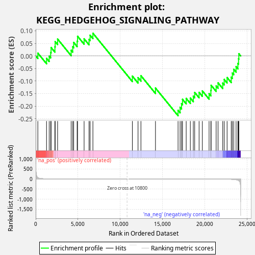
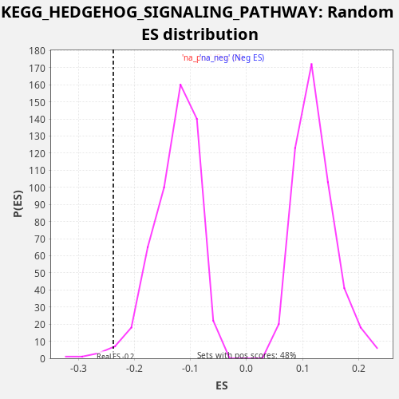

| Dataset | LabCL |
| Phenotype | NoPhenotypeAvailable |
| Upregulated in class | na_neg |
| GeneSet | KEGG_HEDGEHOG_SIGNALING_PATHWAY |
| Enrichment Score (ES) | -0.23841172 |
| Normalized Enrichment Score (NES) | -1.8746625 |
| Nominal p-value | 0.017408123 |
| FDR q-value | 0.08854454 |
| FWER p-Value | 0.569 |

| SYMBOL | RANK IN GENE LIST | RANK METRIC SCORE | RUNNING ES | CORE ENRICHMENT | |
|---|---|---|---|---|---|
| 1 | LRP2 | 253 | 72.073 | 0.0113 | No |
| 2 | PRKACB | 1282 | 7.741 | -0.0095 | No |
| 3 | BMP4 | 1594 | 5.181 | -0.0006 | No |
| 4 | GAS1 | 1771 | 4.054 | 0.0139 | No |
| 5 | WNT3 | 1820 | 3.839 | 0.0336 | No |
| 6 | WNT6 | 2273 | 2.330 | 0.0367 | No |
| 7 | WNT11 | 2300 | 2.273 | 0.0574 | No |
| 8 | WNT5A | 2590 | 1.752 | 0.0672 | No |
| 9 | PRKX | 4195 | 0.498 | 0.0226 | No |
| 10 | WNT4 | 4379 | 0.436 | 0.0368 | No |
| 11 | PRKACA | 4492 | 0.405 | 0.0539 | No |
| 12 | CSNK1D | 4901 | 0.307 | 0.0588 | No |
| 13 | RAB23 | 4952 | 0.295 | 0.0785 | No |
| 14 | BMP8A | 5725 | 0.171 | 0.0683 | No |
| 15 | CSNK1G2 | 6308 | 0.115 | 0.0660 | No |
| 16 | GSK3B | 6434 | 0.105 | 0.0826 | No |
| 17 | ZIC2 | 6766 | 0.082 | 0.0906 | No |
| 18 | BMP5 | 11432 | -0.000 | -0.0804 | No |
| 19 | HHIP | 12105 | -0.003 | -0.0865 | No |
| 20 | GLI1 | 12446 | -0.005 | -0.0788 | No |
| 21 | CSNK1G1 | 14166 | -0.033 | -0.1281 | No |
| 22 | GLI2 | 16837 | -0.171 | -0.2167 | Yes |
| 23 | FBXW11 | 17077 | -0.193 | -0.2048 | Yes |
| 24 | CSNK1G3 | 17248 | -0.213 | -0.1901 | Yes |
| 25 | STK36 | 17363 | -0.226 | -0.1731 | Yes |
| 26 | PTCH1 | 17800 | -0.281 | -0.1693 | Yes |
| 27 | WNT10A | 18289 | -0.356 | -0.1678 | Yes |
| 28 | BTRC | 18642 | -0.423 | -0.1606 | Yes |
| 29 | SUFU | 18804 | -0.459 | -0.1455 | Yes |
| 30 | BMP8B | 19324 | -0.600 | -0.1452 | Yes |
| 31 | BMP2 | 19710 | -0.741 | -0.1394 | Yes |
| 32 | WNT7A | 20506 | -1.134 | -0.1505 | Yes |
| 33 | WNT9A | 20720 | -1.272 | -0.1376 | Yes |
| 34 | WNT5B | 20746 | -1.292 | -0.1168 | Yes |
| 35 | WNT7B | 21343 | -1.928 | -0.1197 | Yes |
| 36 | WNT10B | 21569 | -2.247 | -0.1073 | Yes |
| 37 | WNT2B | 22120 | -3.556 | -0.1083 | Yes |
| 38 | PTCH2 | 22294 | -4.279 | -0.0937 | Yes |
| 39 | SHH | 22637 | -6.362 | -0.0861 | Yes |
| 40 | CSNK1E | 23126 | -11.573 | -0.0845 | Yes |
| 41 | CSNK1A1 | 23258 | -14.031 | -0.0682 | Yes |
| 42 | GLI3 | 23423 | -18.161 | -0.0532 | Yes |
| 43 | WNT16 | 23701 | -31.788 | -0.0429 | Yes |
| 44 | BMP6 | 23914 | -54.172 | -0.0300 | Yes |
| 45 | SMO | 23991 | -69.811 | -0.0114 | Yes |
| 46 | BMP7 | 24027 | -80.634 | 0.0089 | Yes |

{kind=link}
{kind=link}